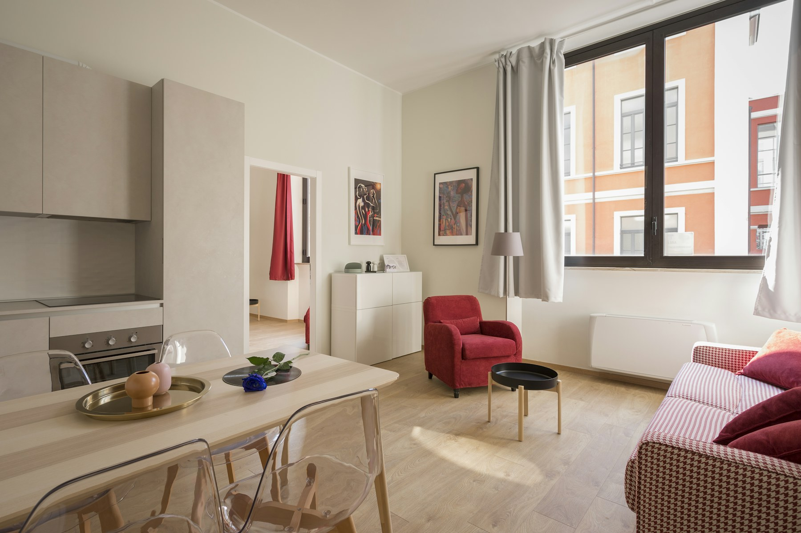
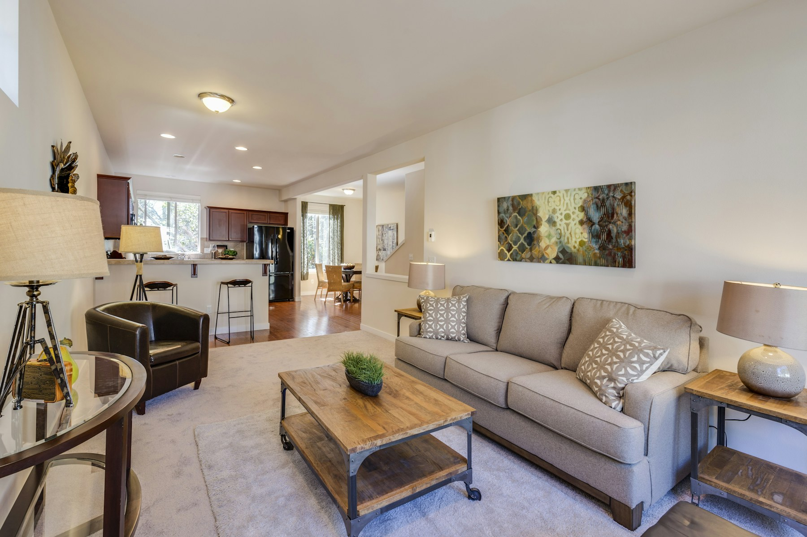
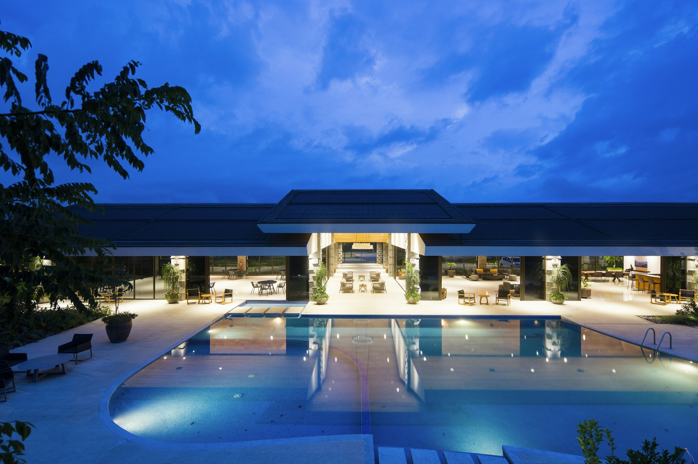
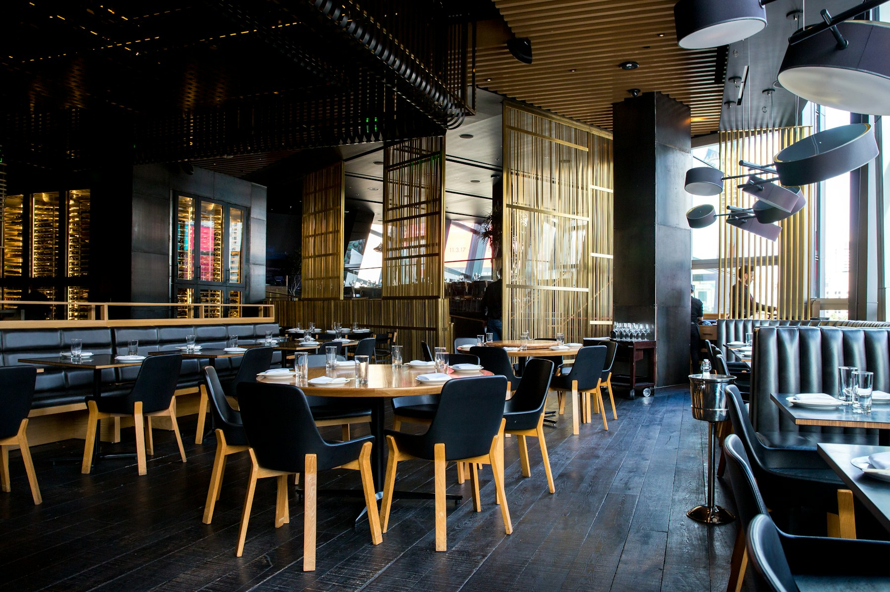
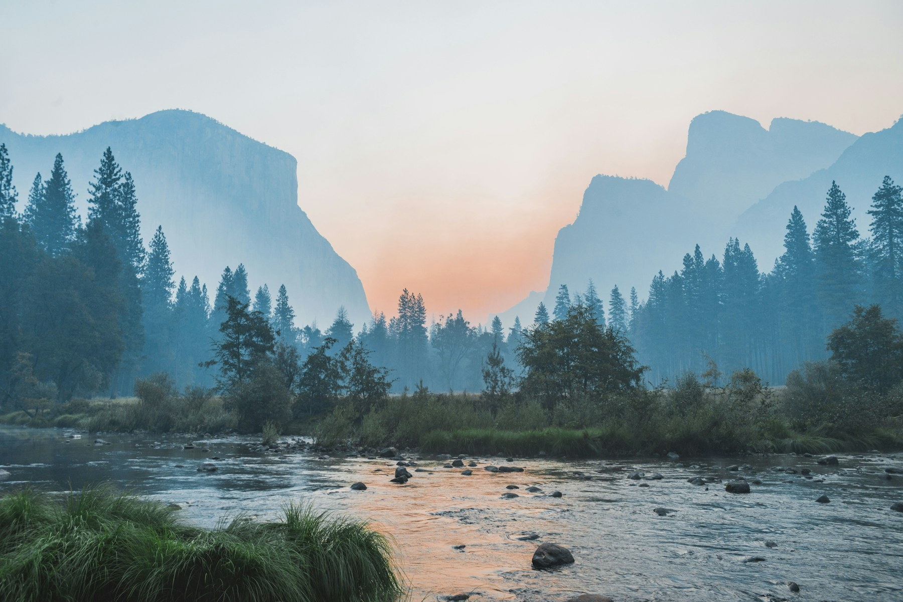
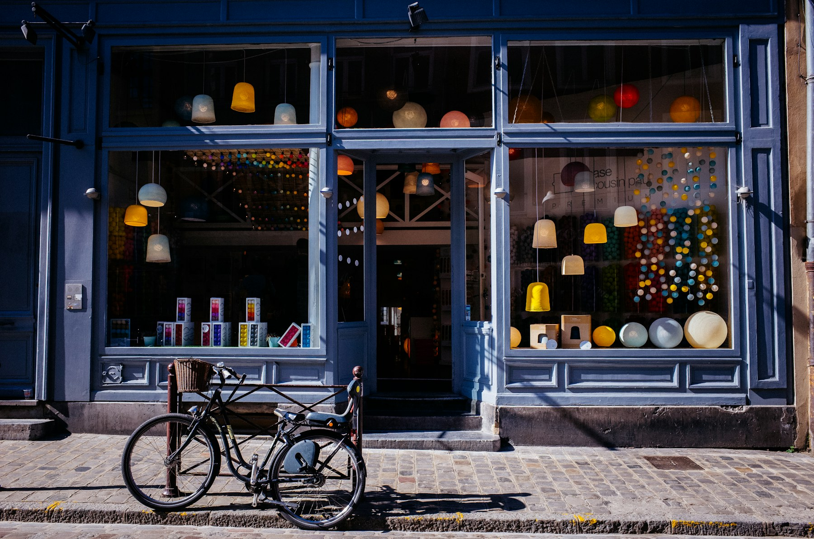

Ziver Başar Konağı
Yaylada odanızı seçin, sofranın sıcaklığını hissedin ve konağın hikayesi sizinle tamamlansın.
Kulakkaya'nın köy içi mevkiinde konumlanan konak, gösterişli olmak yerine iyi hissettiren bir ritim kurar: serin hava, sıcak ışık, sade odalar ve doğaya yakın bir konaklama.
Yol tarifi ve bilgi alDoğa
Kulakkaya'nın yolunda zaman biraz yavaşlar.
Orman dokusu, sisli yayla sabahları ve taş yollar konağın sakin karakterini tamamlar. Burası kısa bir kaçamak için de, yavaş bir hafta sonu için de aynı yalın hissi taşır.
Odalar
Odanızı seçmeden önce atmosferine yakından bakın.
Ahşabın sıcaklığı, sade tekstiller ve yayla sessizliği oda deneyiminin ana karakterini oluşturur.



Sofra
Yaylada iyi bir gün, sakin bir kahvaltıyla başlar.
Güncel servis ve konaklama detaylarını rezervasyon sırasında netleştiriyoruz. Misafirlerimiz telefon veya WhatsApp üzerinden hızlıca bilgi alabilir.

Atmosfer
Konağı tamamlayan küçük sahneler.
Yayla yolu, taş cephe, sofra ve odalar aynı sakin ritmin parçaları olarak bir araya gelir.


“Gösterişten uzak, doğaya yakın, sıcak bir yayla konağı.”
İletişim
Gelmek istediğiniz tarihi söyleyin, kalanını birlikte netleştirelim.
Kulakkaya Mahallesi, Köy İçi Mevki, No:80, 28960 Dereli/Giresun